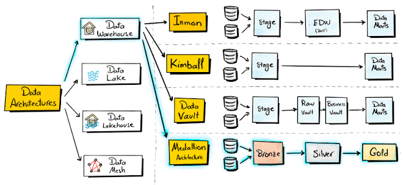
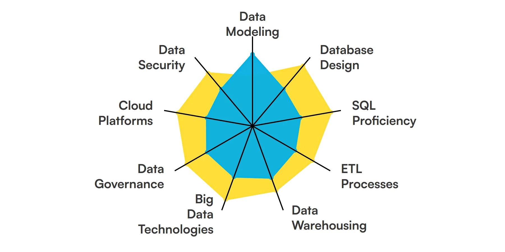

What is a Data Architect?
A data architect is an IT professional who designs the structural blueprints and overall strategy for how an organization collects, stores, organizes, and secures its data
Data Achitects hava an avrage of $115000 a year

